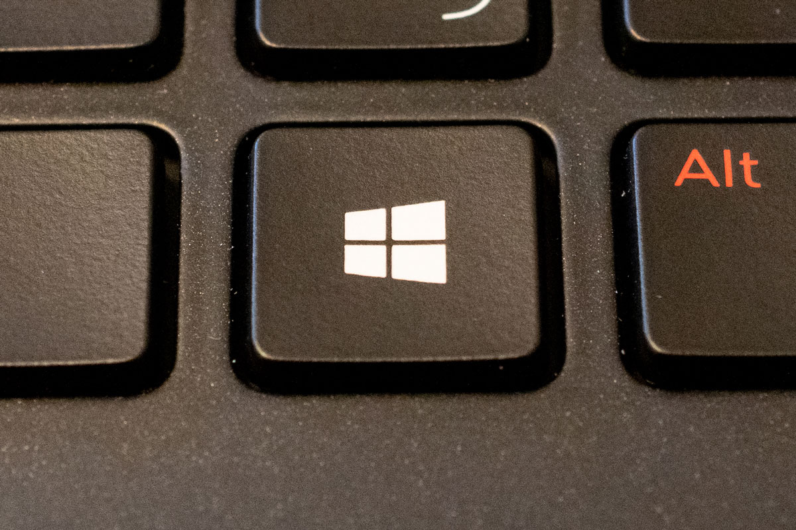
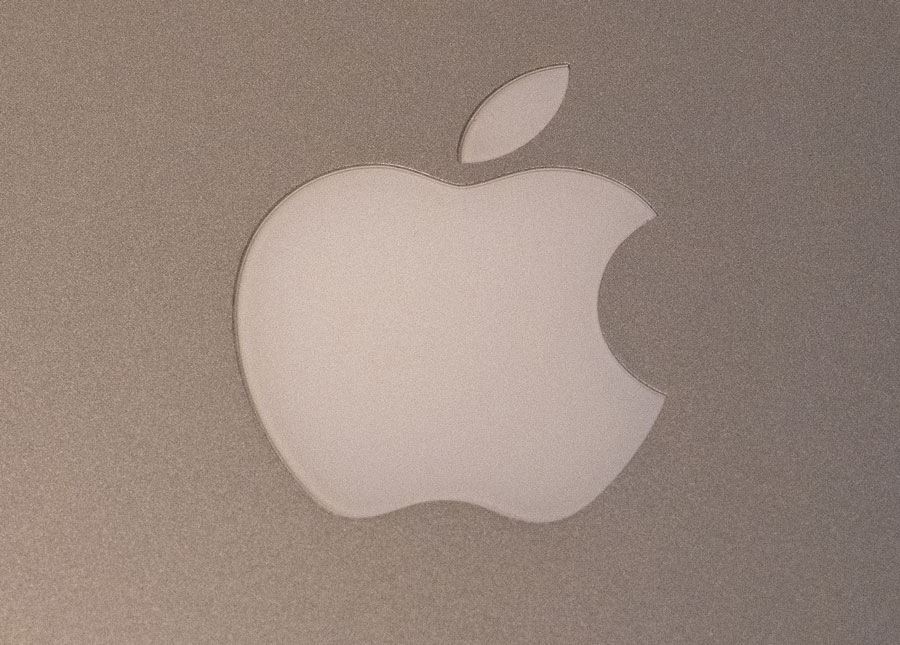
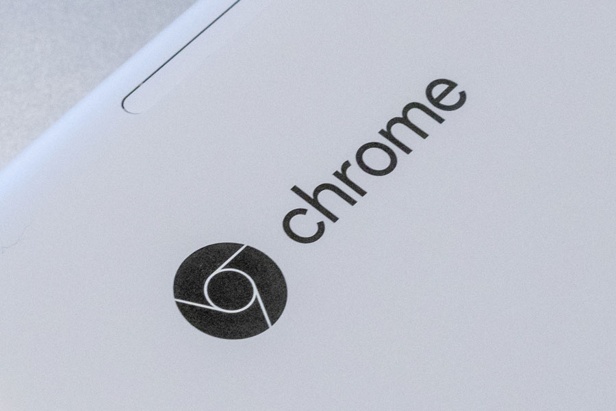

はじめに（この講座について）
この講座は、パソコン（PC）の使い方を基本から学び、Windows や Mac のパソコンを使いこなせるようになることを目指しています。
どんなアプリでも使う操作方法や考え方を覚えて、パソコンをマスターする第一歩を踏み出しましょう。

どんな講座？
ひとくちに「パソコンを習得したい」といっても、人によって事情は違うと思います。
例えば、進学・就職によってパソコンを使う必要が出てきたという人もいるでしょうし、プログラミングなど新しいことに挑戦するためにパソコンの基礎を身に着けたいという人もいるでしょう。ほかにも「ゲームをしたい」「人工知能を作りたい」など、パソコンを習得するにはいろいろな動機があるのではないでしょうか。
また、「パソコンが苦手」といっても、全くパソコンに触ったことがないという人もいれば、普段から使っているけれど自信がないという人もいるでしょう。
この講座は、色々な状況・レベルの人を想定して作られています。クリックや電源のオン・オフといった初歩的な操作から、様々なアプリや使い方でも共通する基本操作、便利な機能、パソコンを安全に使うためのコツなど、様々な人に役立つ知識を 1 つのコースにまとめています。

この講座で学ぶと何ができるようになる？

この講座を終えると、Windows や Mac のパソコンを使いこなせるようになります。
どんなアプリでも使える基礎がきっちり身につくので、学校の課題や、会社での仕事もスムーズにできるようになるはずです。また、学業や就活などでの選択肢も広がるでしょう。
また、プログラミングに興味がある人は、N 予備校のプログラミングコースに進むこともできるようになります。
この講座で必要な知識・経験
前もって必要なことは特にありません。全くパソコンを触ったことがなくても大丈夫です。数学や英語の知識も全く必要ありません。
ただし、ときどきスマホとパソコンを比べて説明することがあります。スマホを使ったことがある人は、より分かりやすく学べるでしょう。
この講座のために用意するもの
この講座は実際にパソコンの使い方を説明しながら進む講座なので、実際に パソコン（Windows あるいは Mac）を用意しましょう。
付録編にはパソコンの選び方も書かれています。これからパソコンを買う人はぜひ参考にしてみてください。
自分のパソコンの種類がわからない場合
この講座は Windows（ウィンドウズ）と Mac（マック）のパソコンに対応しています。
自分のパソコンがどちらか分からない場合、以下の見分け方を参考にしてください。
Windows の場合
Windows の場合、キーボード（ボタン）の左下に 四角が 4 つ描かれたボタン があります。
ちなみに、これは Windows のロゴマークです。
Mac の場合
パソコンの本体にリンゴのマークが描かれています。
ただし、iPad はパソコンではなく タブレット なので、この講座では扱いません。iPad の場合、本体に「iPad」という文字も書かれています。
その他のパソコンの場合
上記のどちらにも当てはまらない場合、Windows でも Mac でもないパソコンだと思われます。
たとえばパソコンの本体に「Chrome」のロゴが描かれている場合、Chromebook（クロームブック）という全く別のパソコンです。
現時点でこの講座は Chromebook などには対応していないので、別途 Windows や Mac のパソコンを用意してください。
この講座の方針
パソコンを学ぶときに身につけることは大きく 2 つに分けられます。それは 仕組みについての知識 と 操作方法 です。

ちょっとだけ、自動車の運転に例えてみましょう。
車はハンドルを回すと曲がります。これが操作方法です。
ただ、車を運転するとき「ハンドルを回したら車が曲がる」ことだけを知っているよりは「ハンドルを回すことでタイヤの向きが変わるから、車が曲がる」と知っているほうがよいでしょう。この「どうしてその操作で動くのか」が 仕組みについての知識 です。

「なぜか良くわからないけど、ハンドルを回したら車が曲がる」という人と、「ハンドルを回すとタイヤの向きが変わるから曲がるんだ」という人では、どちらが安全な運転をできるでしょうか？理由を知っているほうではないでしょうか。

これはパソコンでも同じです。「ここをクリックしたら○○できる」という人より、「ここをクリックすると、パソコンが〜〜をするので○○できる」とわかっている人のほうが、トラブルにぶつかりにくくなります。また、新しいアプリや別のパソコンを使う時も、仕組みがわかっていればすぐに慣れられます。

また、先ほどのたとえ話ですが、自動車に詳しい人ならもっと詳しく説明できるかもしれません。しかし、自動車を日常生活でしか使わない人は工学的な原理までは知らなくてもよいでしょう。
これもパソコンについても同じことが言えます。パソコンを学校の勉強や仕事で使うだけであれば、IT エンジニアが使うような細かい知識は覚えなくてよいです。
この講座では、初心者の方がパソコンをきちんと使いこなせるよう、ちょうどいいレベルの説明を心がけています。
つまり、初心者に必要な操作方法と知識を 最短ルートでバランス良く身につける ことができます！